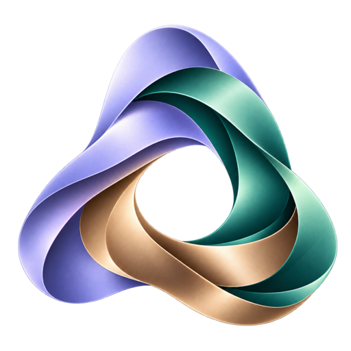

Design system
Henry OS · Thư viện thành phần minh họa
Màu theo vai trò
Điều hướng#192A32
Personal#7753A7
Servicebio#18776E
Ventures#925F32
Enexia #62559C · chữ #22333E · chữ phụ #596B78 · nền #F2F4F6. Màu trạng thái độc lập với màu domain.
Typography
Tiêu đề chức năng · 22px
Nhãn nhóm · 15px
Nội dung · 14px. Kiểm tra tiếng Việt: Tổng quan, tiến độ, kế hoạch, kiểm chứng, nhiệm vụ.
Nguồn và trạng thái · 11px. Không dùng font serif trong giao diện làm việc.
1.234,56Dữ liệu minh họa, không phải KPI thực tế.
Thao tác
Tab để kiểm tra focus · Enter để kích hoạt.
Bảng dữ liệu
| Công việc minh họa | Trạng thái |
|---|---|
| Đối chiếu catalog | Đang làm |
| Kiểm tra nguồn | Đang vướng |
| Xác nhận tài liệu | Đã xác minh |
Màu được đi cùng nhãn; số liệu dùng chữ số có chiều rộng cố định.
Trạng thái dữ liệu
Không tải được nguồn. Giữ dữ liệu hiện có và thử tải lại.
Chưa có dữ liệu cho tuần này.
Logo giữ nguyên tỉ lệ và màu. Desktop: control 36px; điện thoại: 44px. Chuyển động chỉ phản hồi thao tác, tôn trọng reduced motion.